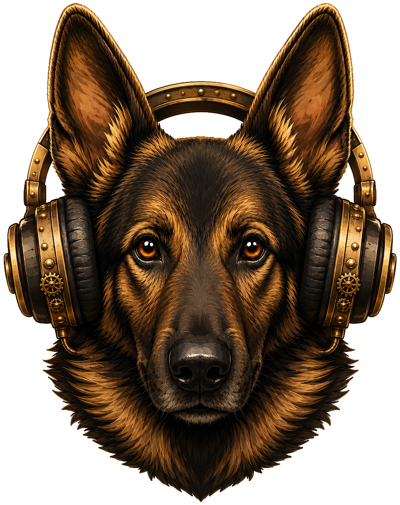

Forged for pitch work, tuned in brass, and dressed in steam.
Octave — name which octave the tone belongs to, ignoring which note it is.
Note — name the note (its letter), no matter which octave it's played in.
Note + Octave — pinpoint both the note and the octave it sounds in. The full challenge.
Grind ignores points, adapting to bias missed tones to help you improve.
Competition serves to track progress between ascensions, providing 100 chances to earn points.
SINN determines if you are worthy of more complexity by adjusting timbre each tone, offering unlimited chances to earn points.
Plays a steady bed of background noise under the tone, so you must pick the pitch out of the wash.
Sometimes fades the tone in instead of striking it, hiding the sharp onset your ear leans on. The slider sets how often that happens.
Gives you a shrinking time limit to answer each tone before it locks. Shorter is harder.
Shifts the tone slightly off true pitch, so you must round to the nearest note. Wider detune is harder.
Wraps the target inside a second competing tone, so you must isolate the one you are meant to name.
Varies how long each tone lasts. Short blips give your ear fewer cycles to lock the pitch.
Fires a burst of noise right after the tone, wiping the echo your memory holds onto. Higher intensity wipes more.
Throws each tone to a random spot between your left and right ears. Use both headphones. Wider spread is harder.
Repeats the tone for you on a timer, just like spamming the replay button — so you can sit inside the attack. Slide from no replay at all, up to as fast as you could press it.
Wavers the pitch up and down around the true note, blurring its centre. Deeper vibrato is harder.
Randomizes how loud each tone plays within a range you set, so you cannot use loudness as a cue.
Listen carefully…
Switch, create, or remove a profile
You're Sinning. Good.
Stretch your arms farther.